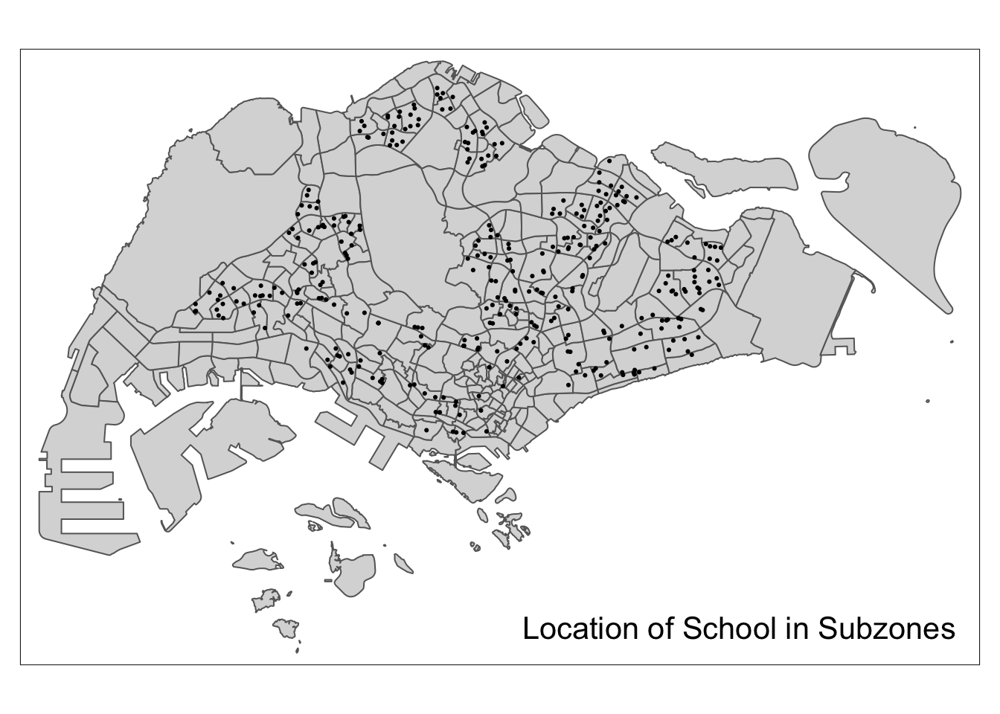
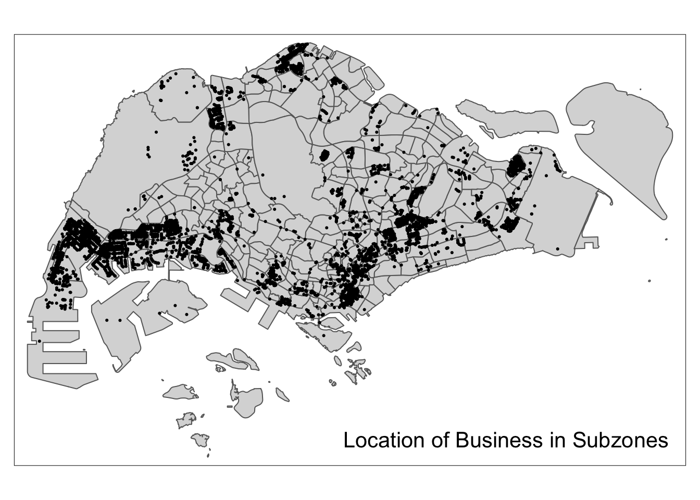

pacman::p_load(tidyverse, sf, httr, tmap)Geocoding using API
1. Overview
Learning Objectives
- Perform geocoding by using SLA OneMap API
- Convert an aspatial data into a simple feature tibble data.frame
- Perform point-in-polygon count analysis
- Append the propulsiveness and attractiveness variables onto a flow data.
2. Load packages
The analysis involves the following packages:
sfimports and handles geospatial datahttrprovide a wrapper for the curl package, customised to the demands of modern web APIs.tidyverseperforms aspatial data import, wrangling and visualizationtmapsupports data visualisation
3. Import data
school is an aspatial dataset where all the school directory and information is available for download here. The output indicates that there are 346 features and 31 fields.
school <- read_csv("data/aspatial/Generalinformationofschools.csv")
glimpse(school)Rows: 346
Columns: 31
$ school_name <chr> "ADMIRALTY PRIMARY SCHOOL", "ADMIRALTY SECONDARY SC…
$ url_address <chr> "https://admiraltypri.moe.edu.sg/", "http://www.adm…
$ address <chr> "11 WOODLANDS CIRCLE", "31 WOODLANDS CRESCENT",…
$ postal_code <chr> "738907", "737916", "768643", "768928", "579646", "…
$ telephone_no <chr> "63620598", "63651733", "67592906", "67585384", "64…
$ telephone_no_2 <chr> "na", "63654596", "na", "na", "na", "na", "na", "na…
$ fax_no <chr> "63627512", "63652774", "67592927", "67557778", "64…
$ fax_no_2 <chr> "na", "na", "na", "na", "na", "na", "na", "na", "na…
$ email_address <chr> "ADMIRALTY_PS@MOE.EDU.SG", "Admiralty_SS@moe.edu.sg…
$ mrt_desc <chr> "Admiralty Station", "ADMIRALTY MRT", "Yishun", "CA…
$ bus_desc <chr> "TIBS 965, 964, 913", "904", "Yishun Ring Road - 81…
$ principal_name <chr> "MR PEK WEE HAUR", "MR LAM YUI- P'NG", "MISS ONG LE…
$ first_vp_name <chr> "MDM CHUA MUI LING", "MR NG SONG LIM STEVEN", "MADA…
$ second_vp_name <chr> "MDM NUR SABARIAH BTE MOHD IBRAHIM", "MR SHEIK ALAU…
$ third_vp_name <chr> "NULL", "NULL", "NULL", "NULL", "NULL", "NULL", "NU…
$ fourth_vp_name <chr> "NULL", "NULL", "NULL", "NULL", "NULL", "NULL", "NU…
$ fifth_vp_name <chr> "NULL", "NULL", "NULL", "NULL", "NULL", "NULL", "NU…
$ sixth_vp_name <chr> "NULL", "NULL", "NULL", "NULL", "NULL", "NULL", "NU…
$ dgp_code <chr> "WOODLANDS", "WOODLANDS", "YISHUN", "YISHUN", "BISH…
$ zone_code <chr> "NORTH", "NORTH", "NORTH", "NORTH", "SOUTH", "SOUTH…
$ type_code <chr> "GOVERNMENT SCHOOL", "GOVERNMENT SCHOOL", "GOVERNME…
$ nature_code <chr> "CO-ED SCHOOL", "CO-ED SCHOOL", "CO-ED SCHOOL", "CO…
$ session_code <chr> "FULL DAY", "SINGLE SESSION", "SINGLE SESSION", "SI…
$ mainlevel_code <chr> "PRIMARY", "SECONDARY", "PRIMARY", "SECONDARY", "PR…
$ sap_ind <chr> "No", "No", "No", "No", "Yes", "No", "No", "No", "N…
$ autonomous_ind <chr> "No", "No", "No", "No", "No", "No", "No", "No", "Ye…
$ gifted_ind <chr> "No", "No", "No", "No", "No", "No", "No", "No", "No…
$ ip_ind <chr> "No", "No", "No", "No", "No", "No", "No", "No", "No…
$ mothertongue1_code <chr> "Chinese", "Chinese", "Chinese", "Chinese", "Chines…
$ mothertongue2_code <chr> "Malay", "Malay", "Malay", "Malay", "na", "Malay", …
$ mothertongue3_code <chr> "Tamil", "Tamil", "Tamil", "Tamil", "na", "Tamil", …mpsz is is a geospatial dataset of the Master Plan 2019, a forward looking guiding plan for Singapore’s development in the medium term over the next 10 to 15 years published in 2019.
The output indicates that the geospatial objects are multipolygon features. There are 332 features and 6 fields. It is in WGS84 projected coordinates system with XY dimension.
Source: URA (Download here)
mpsz = st_read(dsn="data/geospatial", layer="MPSZ-2019")Reading layer `MPSZ-2019' from data source
`/Users/chockwankee/Documents/chockwk/ISSS624_Geospatial_Analytics/In_class_Ex/In_class_Ex04/data/geospatial'
using driver `ESRI Shapefile'
Simple feature collection with 332 features and 6 fields
Geometry type: MULTIPOLYGON
Dimension: XY
Bounding box: xmin: 103.6057 ymin: 1.158699 xmax: 104.0885 ymax: 1.470775
Geodetic CRS: WGS 84mpsz <- st_transform(mpsz, crs = 3414)st_crs(mpsz)Coordinate Reference System:
User input: EPSG:3414
wkt:
PROJCRS["SVY21 / Singapore TM",
BASEGEOGCRS["SVY21",
DATUM["SVY21",
ELLIPSOID["WGS 84",6378137,298.257223563,
LENGTHUNIT["metre",1]]],
PRIMEM["Greenwich",0,
ANGLEUNIT["degree",0.0174532925199433]],
ID["EPSG",4757]],
CONVERSION["Singapore Transverse Mercator",
METHOD["Transverse Mercator",
ID["EPSG",9807]],
PARAMETER["Latitude of natural origin",1.36666666666667,
ANGLEUNIT["degree",0.0174532925199433],
ID["EPSG",8801]],
PARAMETER["Longitude of natural origin",103.833333333333,
ANGLEUNIT["degree",0.0174532925199433],
ID["EPSG",8802]],
PARAMETER["Scale factor at natural origin",1,
SCALEUNIT["unity",1],
ID["EPSG",8805]],
PARAMETER["False easting",28001.642,
LENGTHUNIT["metre",1],
ID["EPSG",8806]],
PARAMETER["False northing",38744.572,
LENGTHUNIT["metre",1],
ID["EPSG",8807]]],
CS[Cartesian,2],
AXIS["northing (N)",north,
ORDER[1],
LENGTHUNIT["metre",1]],
AXIS["easting (E)",east,
ORDER[2],
LENGTHUNIT["metre",1]],
USAGE[
SCOPE["Cadastre, engineering survey, topographic mapping."],
AREA["Singapore - onshore and offshore."],
BBOX[1.13,103.59,1.47,104.07]],
ID["EPSG",3414]]business is is a geospatial dataset prepared by Prof Kam.
The output indicates that the geospatial objects are point features. There are 6,650 features and 3 fields. It is in SVY21 projected coordinates system with XY dimension.
business = st_read(dsn="data/geospatial", layer="Business")Reading layer `Business' from data source
`/Users/chockwankee/Documents/chockwk/ISSS624_Geospatial_Analytics/In_class_Ex/In_class_Ex04/data/geospatial'
using driver `ESRI Shapefile'
Simple feature collection with 6550 features and 3 fields
Geometry type: POINT
Dimension: XY
Bounding box: xmin: 3669.148 ymin: 25408.41 xmax: 47034.83 ymax: 50148.54
Projected CRS: SVY21 / Singapore TMglimpse(business)Rows: 6,550
Columns: 4
$ POI_NAME <chr> "JOHN CHEN", "TROPICAL INDUSTRIAL BUILDING", "LIAN CHEONG I…
$ POI_ST_NUM <chr> "6", "14", "12", NA, "2", "21", "68", "68", NA, "14", "10",…
$ POI_ST_NAM <chr> "LITTLE RD", "LITTLE RD", "LITTLE RD", NA, "LITTLE RD", "LO…
$ geometry <POINT [m]> POINT (33818.36 35620.16), POINT (33770.51 35610.2), …4. Geocoding
Address geocoding or geocoding is the process of identifying a aspatial description of a location on the Earth surface through its address, postcode, geographic coordinates or latitude/longitude pair.
Singapore Land Authority (SLA) supports an online geocoding service called OneMap API. The Search API looks up the address or 6-digit postal code for an entered value and returns both latitude, longitude and x,y coordinates of the searched location.
Step 1: The input school is a csv. Select the postal code from into a list, which reads into the API efficiently.
postcodes <- school$postal_codeStep 2: Two tibble data frames are created, found contains all records geocoded correctly and not_found contains postal that failed to be geocoded.
found <- data.frame()
not_found <- data.frame()Step 3: A collection of http call functions of httr, such as GET() will pass the records to the geocoding server at OneMap. Obtain results from OneMap API, namely BLK_NO, ROAD_NAME, BUILDING, ADDRESS, POSTAL, X, Y, LATITUDE, LONGITUDE.
url <- "https://www.onemap.gov.sg/api/common/elastic/search"
for (postcode in postcodes){
query <- list("searchVal" = postcode,
"returnGeom" = "Y",
"getAddrDetails" = "Y",
"pageNum" = "1")
res <- GET(url , query = query)
if((content(res)$found) != 0){
found <- rbind(found, data.frame(content(res))[4:13])
}else{
not_found = data.frame(postcode)
}
}glimpse(found)Rows: 345
Columns: 10
$ results.SEARCHVAL <chr> "THE LEARNING HARBOUR @ ADMIRALTY PRIMARY SCHOOL", "…
$ results.BLK_NO <chr> "11", "31", "10", "751", "100", "2A", "31", "19", "1…
$ results.ROAD_NAME <chr> "WOODLANDS CIRCLE", "WOODLANDS CRESCENT", "YISHUN ST…
$ results.BUILDING <chr> "THE LEARNING HARBOUR @ ADMIRALTY PRIMARY SCHOOL", "…
$ results.ADDRESS <chr> "11 WOODLANDS CIRCLE THE LEARNING HARBOUR @ ADMIRALT…
$ results.POSTAL <chr> "738907", "737916", "768643", "768928", "579646", "1…
$ results.X <chr> "24315.9398124339", "24559.0472937012", "27958.13714…
$ results.Y <chr> "47135.3542042952", "47504.7873554379", "46096.26276…
$ results.LATITUDE <chr> "1.44254963931583", "1.44589068910993", "1.433152715…
$ results.LONGITUDE <chr> "103.800213682734", "103.802398196596", "103.8329424…Step 3: Merge school information with geospatial data from OneMap API.
merged = merge(school, found,
by.x = "postal_code",
by.y = "results.POSTAL",
all = TRUE)
write_csv(merged, file = "data/aspatial/schools.csv")
write_csv(not_found, file = "data/aspatial/not_found.csv")
glimpse(merged)Rows: 350
Columns: 40
$ postal_code <chr> "088256", "099138", "099757", "099840", "109100", "…
$ school_name <chr> "CANTONMENT PRIMARY SCHOOL", "CHIJ ST. THERESA'S CO…
$ url_address <chr> "http://www.cantonmentpri.moe.edu.sg", "http://www.…
$ address <chr> "1 Cantonment Close", "160 LOWER DELTA ROAD", "…
$ telephone_no <chr> "65119555", "64775777", "62730096", "62733937", "62…
$ telephone_no_2 <chr> "na", "na", "na", "na", "na", "na", "na", "na", "na…
$ fax_no <chr> "65119556", "64775700", "62731710", "62763083", "62…
$ fax_no_2 <chr> "na", "na", "na", "na", "na", "na", "na", "na", "na…
$ email_address <chr> "cantonment_ps@moe.edu.sg", "CHIJSTCS@MOE.EDU.SG", …
$ mrt_desc <chr> "Tanjong Pagar Outram Park", "HARBOURFRONT MRT, TIO…
$ bus_desc <chr> "75, 167, 196", "65, 121, 123, 123M, 124, 131, 131M…
$ principal_name <chr> "MRS MANOKARA SUGUNAVATHI", "MDM TAN MEI MEI JENNY"…
$ first_vp_name <chr> "MRS AUDREA CHIN", "MDM ONG LEE LEE", "MS NG CHIOU …
$ second_vp_name <chr> "MISS CHENG SHIN MIIN", "MISS KUO ZHAOYAN, FELICIA"…
$ third_vp_name <chr> "NULL", "NULL", "NULL", "NULL", "NULL", "NULL", "NU…
$ fourth_vp_name <chr> "NULL", "NULL", "NULL", "NULL", "NULL", "NULL", "NU…
$ fifth_vp_name <chr> "NULL", "NULL", "NULL", "NULL", "NULL", "NULL", "NU…
$ sixth_vp_name <chr> "NULL", "NULL", "NULL", "NULL", "NULL", "NULL", "NU…
$ dgp_code <chr> "BUKIT MERAH", "BUKIT MERAH", "BUKIT MERAH", "BUKIT…
$ zone_code <chr> "SOUTH", "SOUTH", "SOUTH", "SOUTH", "SOUTH", "SOUTH…
$ type_code <chr> "GOVERNMENT SCHOOL", "GOVERNMENT-AIDED SCH", "GOVER…
$ nature_code <chr> "CO-ED SCHOOL", "GIRLS' SCHOOL", "GIRLS' SCHOOL", "…
$ session_code <chr> "SINGLE SESSION", "SINGLE SESSION", "SINGLE SESSION…
$ mainlevel_code <chr> "PRIMARY", "SECONDARY", "PRIMARY", "PRIMARY", "PRIM…
$ sap_ind <chr> "No", "No", "No", "No", "No", "No", "No", "No", "Ye…
$ autonomous_ind <chr> "No", "No", "No", "No", "No", "No", "No", "No", "No…
$ gifted_ind <chr> "No", "No", "No", "No", "No", "No", "No", "No", "Ye…
$ ip_ind <chr> "No", "No", "No", "No", "No", "No", "No", "No", "No…
$ mothertongue1_code <chr> "Chinese", "Chinese", "Chinese", "Chinese", "Chines…
$ mothertongue2_code <chr> "Malay", "Malay", "Malay", "Malay", "Malay", "Malay…
$ mothertongue3_code <chr> "Tamil", "Tamil", "Tamil", "Tamil", "Tamil", "na", …
$ results.SEARCHVAL <chr> "KIDZ TREEHOUSE @ CANTONMENT", "CHIJ SAINT THERESA'…
$ results.BLK_NO <chr> "1", "160", "1", "1", "91", "147", "301", "50", "30…
$ results.ROAD_NAME <chr> "CANTONMENT CLOSE", "LOWER DELTA ROAD", "BUKIT TERE…
$ results.BUILDING <chr> "KIDZ TREEHOUSE @ CANTONMENT", "CHIJ SAINT THERESA'…
$ results.ADDRESS <chr> "1 CANTONMENT CLOSE KIDZ TREEHOUSE @ CANTONMENT SIN…
$ results.X <chr> "28748.1620587641", "26789.3781491434", "27402.9654…
$ results.Y <chr> "28659.9995642845", "28647.4426490944", "28579.8478…
$ results.LATITUDE <chr> "1.27546534984202", "1.27535177510054", "1.27474048…
$ results.LONGITUDE <chr> "103.840041087946", "103.822440701642", "103.827954…Step 4: Manually add Zhenghua Secondary School longitude and latitude into school.csv Google search output 1.3887°N 103.7652°E
find_na <- function(data) {
na_rows <- which(is.na(data$results.LATITUDE) | is.na(data$results.LONGITUDE))
na_schools <- data$school_name[na_rows]
return(na_schools)
}
na_schools <- find_na(merged)
print(na_schools)[1] "ZHENGHUA SECONDARY SCHOOL"# Find the index of ZHENGHUA SECONDARY SCHOOL
index <- which(merged$school_name == "ZHENGHUA SECONDARY SCHOOL")
# Add the specified values to the LATITUDE and LONGITUDE for this school
merged$results.LATITUDE[index] <- 1.3887
merged$results.LONGITUDE[index] <- 103.7652
# Print the record for ZHENGHUA SECONDARY SCHOOL after the addition
print(merged[index, ]) postal_code school_name url_address
257 677741 ZHENGHUA SECONDARY SCHOOL http://www.zhenghuasec.moe.edu.sg
address telephone_no telephone_no_2 fax_no fax_no_2
257 91 SENJA ROAD 67639455 na 67633577 na
email_address mrt_desc bus_desc principal_name
257 ZHENGHUA_SS@MOE.EDU.SG JELAPANG LRT 920, 922, 976 MR LIN YUCHENG EUGENE
first_vp_name second_vp_name third_vp_name fourth_vp_name
257 MR PHOR HOAY GUAN MDM TAN PEI LEE ELAINE NULL NULL
fifth_vp_name sixth_vp_name dgp_code zone_code type_code
257 NULL NULL BUKIT PANJANG WEST GOVERNMENT SCHOOL
nature_code session_code mainlevel_code sap_ind autonomous_ind
257 CO-ED SCHOOL SINGLE SESSION SECONDARY No No
gifted_ind ip_ind mothertongue1_code mothertongue2_code mothertongue3_code
257 No No Chinese Malay Tamil
results.SEARCHVAL results.BLK_NO results.ROAD_NAME results.BUILDING
257 <NA> <NA> <NA> <NA>
results.ADDRESS results.X results.Y results.LATITUDE results.LONGITUDE
257 <NA> <NA> <NA> 1.3887 103.7652Step 5: Import schools and rename columns
school2 <- merged%>%
rename(latitude = results.LATITUDE,
longitude = results.LONGITUDE) %>%
select(postal_code, school_name, latitude, longitude)
glimpse(school2)Rows: 350
Columns: 4
$ postal_code <chr> "088256", "099138", "099757", "099840", "109100", "127368"…
$ school_name <chr> "CANTONMENT PRIMARY SCHOOL", "CHIJ ST. THERESA'S CONVENT",…
$ latitude <chr> "1.27546534984202", "1.27535177510054", "1.27474048872023"…
$ longitude <chr> "103.840041087946", "103.822440701642", "103.827954007978"…Step 6: Convert aspatial data to sf tibble data frame Convert WGS84 (crs=4326) to SVY21 (crs=3414).
The output indicates point spatial object in XY dimension. There are 350 records. The projected CRS is SVY21.
school_sf <- st_as_sf(school2,
coords = c("longitude", "latitude"),
crs = 4326)%>%
st_transform(crs = 3414)
head(school_sf, n=5)Simple feature collection with 5 features and 2 fields
Geometry type: POINT
Dimension: XY
Bounding box: xmin: 25248.37 ymin: 28579.85 xmax: 28748.16 ymax: 28733.28
Projected CRS: SVY21 / Singapore TM
postal_code school_name geometry
1 088256 CANTONMENT PRIMARY SCHOOL POINT (28748.16 28660)
2 099138 CHIJ ST. THERESA'S CONVENT POINT (26789.38 28647.44)
3 099757 CHIJ (KELLOCK) POINT (27402.97 28579.85)
4 099840 RADIN MAS PRIMARY SCHOOL POINT (26983.87 28603.93)
5 109100 BLANGAH RISE PRIMARY SCHOOL POINT (25248.37 28733.28)5. Plot data
::: panel-tabset
mpsz
Plot a point simple feature layer using school_sf. Note: school_sf consists of spatial points, so it cannot accept tm_fill/tm_borders/tm_polygons.
#tmap_mode("view")
tmap_options(check.and.fix = TRUE)
tm_shape(mpsz)+
tm_polygons()+
tm_shape(school_sf)+
tm_dots()+
tm_view(set.zoom.limits = c(11,12))+
tm_layout(title = "Location of School in Subzones",
title.position = c("right", "bottom"))
tmap_mode("plot") # release resourcesbusiness
tmap_options(check.and.fix = TRUE)
tm_shape(mpsz) +
tm_polygons() +
tm_shape(business) +
tm_dots()+
tm_layout(title = "Location of Business in Subzones",
title.position = c("right", "bottom"))
5. Explore data
Count the number of schools within each planning subzone.
mpsz$"SCHOOL_COUNT" <- lengths(
st_intersects(mpsz, school_sf)
)
summary(mpsz$SCHOOL_COUNT) Min. 1st Qu. Median Mean 3rd Qu. Max.
0.000 0.000 0.000 1.054 2.000 12.000 The summary statistics above reveals that there are excessive 0 values in SCHOOL_COUNT field. If log() is going to use to transform this field, additional step is required to ensure that all 0 will be replaced with a value between 0 and 1 because log0 is infinity and log1 has a value.
Count the number of schools within each planning subzone.
mpsz$"BUSINESS_COUNT" <- lengths(
st_intersects(mpsz, business)
)
summary(mpsz$BUSINESS_COUNT) Min. 1st Qu. Median Mean 3rd Qu. Max.
0.00 0.00 2.00 19.73 13.00 307.00 4. Integrate data
flow_data is an sf tibble data.frame and the features are polylines linking the centroid of origins and destination planning subzone.
flow_data <- read_rds("data/rds/SIM_data.rds")
flow_data# A tibble: 14,274 × 12
# Groups: ORIGIN_SZ [279]
ORIGIN_SZ DESTIN_SZ TRIPS FlowNoIntra offset dist ORIGIN_AGE7_12
<chr> <chr> <dbl> <dbl> <dbl> <dbl> <dbl>
1 AMSZ01 AMSZ02 6790 6790 1 810. 310
2 AMSZ01 AMSZ03 7242 7242 1 1361. 310
3 AMSZ01 AMSZ04 2048 2048 1 840. 310
4 AMSZ01 AMSZ05 4594 4594 1 1077. 310
5 AMSZ01 AMSZ06 1767 1767 1 805. 310
6 AMSZ01 AMSZ07 1136 1136 1 1799. 310
7 AMSZ01 AMSZ08 1703 1703 1 2576. 310
8 AMSZ01 AMSZ09 1494 1494 1 1204. 310
9 AMSZ01 AMSZ10 41 41 1 1418. 310
10 AMSZ01 AMSZ11 393 393 1 2314. 310
# ℹ 14,264 more rows
# ℹ 5 more variables: ORIGIN_AGE13_24 <dbl>, ORIGIN_AGE25_64 <dbl>,
# DESTIN_AGE7_12 <dbl>, DESTIN_AGE13_24 <dbl>, DESTIN_AGE25_64 <dbl>Select the columns from mpsz to be appended to flow_data
mpsz_tidy <- mpsz %>%
st_drop_geometry() %>%
select(SUBZONE_C, SCHOOL_COUNT, BUSINESS_COUNT)Append SCHOOL_COUNT and BUSINESS_COUNT fields from mpsz_tidy data.frame into flow_data sf tibble data.frame
flow_data <- flow_data %>%
left_join(mpsz_tidy,
by = c("DESTIN_SZ" = "SUBZONE_C"))
glimpse(flow_data)Rows: 14,274
Columns: 14
Groups: ORIGIN_SZ [279]
$ ORIGIN_SZ <chr> "AMSZ01", "AMSZ01", "AMSZ01", "AMSZ01", "AMSZ01", "AMS…
$ DESTIN_SZ <chr> "AMSZ02", "AMSZ03", "AMSZ04", "AMSZ05", "AMSZ06", "AMS…
$ TRIPS <dbl> 6790, 7242, 2048, 4594, 1767, 1136, 1703, 1494, 41, 39…
$ FlowNoIntra <dbl> 6790, 7242, 2048, 4594, 1767, 1136, 1703, 1494, 41, 39…
$ offset <dbl> 1, 1, 1, 1, 1, 1, 1, 1, 1, 1, 1, 1, 1, 1, 1, 1, 1, 1, …
$ dist <dbl> 810.4491, 1360.9294, 840.4432, 1076.7916, 805.2979, 17…
$ ORIGIN_AGE7_12 <dbl> 310, 310, 310, 310, 310, 310, 310, 310, 310, 310, 310,…
$ ORIGIN_AGE13_24 <dbl> 710, 710, 710, 710, 710, 710, 710, 710, 710, 710, 710,…
$ ORIGIN_AGE25_64 <dbl> 2780, 2780, 2780, 2780, 2780, 2780, 2780, 2780, 2780, …
$ DESTIN_AGE7_12 <dbl> 1140, 1010, 980, 810, 1050, 420, 390, 1190, 0, 0, 260,…
$ DESTIN_AGE13_24 <dbl> 2770, 2650, 2000, 1920, 2390, 1120, 1150, 3260, 0, 0, …
$ DESTIN_AGE25_64 <dbl> 15700, 14240, 11320, 9650, 12460, 3620, 4350, 13350, 0…
$ SCHOOL_COUNT <int> 2, 2, 1, 3, 2, 0, 0, 3, 1, 0, 0, 1, 1, 7, 4, 5, 1, 3, …
$ BUSINESS_COUNT <int> 0, 6, 0, 0, 0, 1, 117, 0, 20, 0, 0, 207, 13, 5, 31, 0,…Checking for variables with zero values
Since Poisson Regression is based of log and log 0 is undefined, it is important for us to ensure that no 0 values in the explanatory variables. summary() of Base R is used to compute the summary statistics of all variables in wd_od data frame.
summary(flow_data) ORIGIN_SZ DESTIN_SZ TRIPS FlowNoIntra
Length:14274 Length:14274 Min. : 1.0 Min. : 1.0
Class :character Class :character 1st Qu.: 11.0 1st Qu.: 11.0
Mode :character Mode :character Median : 56.0 Median : 56.0
Mean : 664.3 Mean : 664.3
3rd Qu.: 296.0 3rd Qu.: 296.0
Max. :104167.0 Max. :104167.0
offset dist ORIGIN_AGE7_12 ORIGIN_AGE13_24 ORIGIN_AGE25_64
Min. :1 Min. : 173.8 Min. : 0 Min. : 0 Min. : 0
1st Qu.:1 1st Qu.: 3465.4 1st Qu.: 240 1st Qu.: 460 1st Qu.: 2210
Median :1 Median : 6121.0 Median : 710 Median : 1400 Median : 7030
Mean :1 Mean : 6951.8 Mean :1037 Mean : 2278 Mean :10536
3rd Qu.:1 3rd Qu.: 9725.1 3rd Qu.:1500 3rd Qu.: 3282 3rd Qu.:15830
Max. :1 Max. :26135.8 Max. :6340 Max. :16380 Max. :74610
DESTIN_AGE7_12 DESTIN_AGE13_24 DESTIN_AGE25_64 SCHOOL_COUNT
Min. : 0 Min. : 0 Min. : 0 Min. : 0.000
1st Qu.: 250 1st Qu.: 460 1st Qu.: 2210 1st Qu.: 0.000
Median : 720 Median : 1430 Median : 7120 Median : 1.000
Mean :1040 Mean : 2305 Mean :10648 Mean : 1.593
3rd Qu.:1500 3rd Qu.: 3290 3rd Qu.:15830 3rd Qu.: 2.000
Max. :6340 Max. :16380 Max. :74610 Max. :12.000
BUSINESS_COUNT
Min. : 0.00
1st Qu.: 0.00
Median : 3.00
Mean : 16.05
3rd Qu.: 12.00
Max. :307.00 The output shows that variables ORIGIN_AGE7_12, ORIGIN_AGE13_24, ORIGIN_AGE25_64, DESTIN_AGE7_12, DESTIN_AGE13_24, DESTIN_AGE25_64, SCHOOL_COUNT and BUSINESS_COUNT consist of 0 values.
flow_data$SCHOOL_COUNT <- ifelse(
flow_data$SCHOOL_COUNT == 0,
0.99, flow_data$SCHOOL_COUNT)
flow_data$BUSINESS_COUNT <- ifelse(
flow_data$BUSINESS_COUNT == 0,
0.99, flow_data$BUSINESS_COUNT)write_rds(flow_data, "data/rds/flow_data1_tidy.rds")